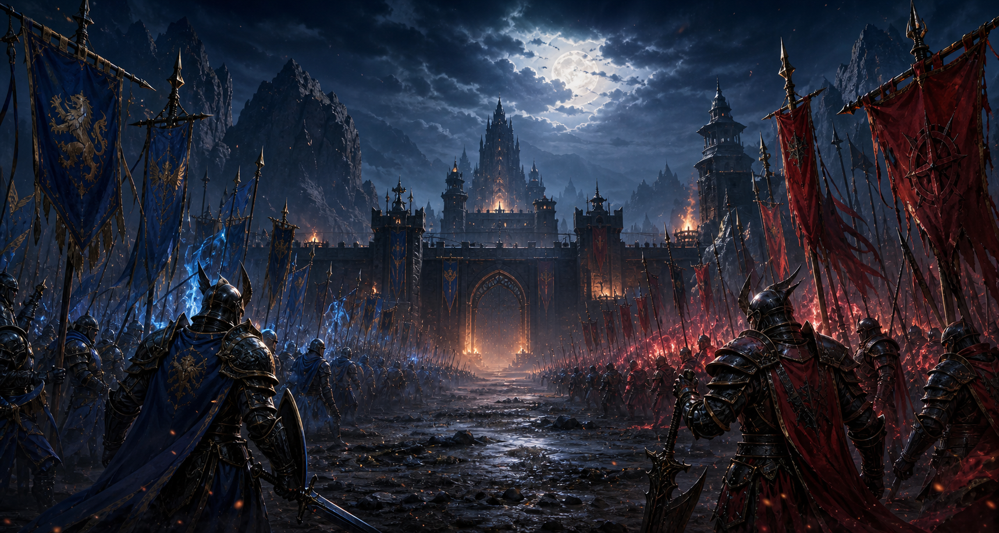

Human Kingdom
El Morad represents the more classic fantasy kingdom side. Players fight with their clans to show the strength of their nation in large battles.

Unofficial hobby project
A personal introduction page about the classic MMORPG experience built around nation wars, party coordination, item farming, market economy, and PvP rivalry.
Knight Online is an MMORPG where two major factions compete, players build characters, and organized groups fight for control. The game feels strongest when it is played with parties, clans, and a nation-based community.
The player chooses a character, levels up, collects gear, and fights for their faction in war zones. Farming coins, upgrading items, and making smart market decisions directly affect character strength.
Every improvement can be felt in gameplay. A stronger weapon, better armor, stronger accessories, or a more coordinated party can change the outcome of PvP. Effort, economy, and combat are tied together.
The conflict between two sides creates the main atmosphere of the game. It gives players not only a character, but also a faction identity and a sense of belonging.
El Morad represents the more classic fantasy kingdom side. Players fight with their clans to show the strength of their nation in large battles.
Karus has a darker and more aggressive visual identity. Pressure, coordination, and timing matter a lot during major wars.
Each class has a different responsibility in a party. A strong team balances damage, support, control, and survivability.
Warriors create pressure on the front line. High durability and strong physical damage make them important during party pushes.
Rogues can be played as assassins or archers. Speed, burst damage, and positioning define the class.
Mages provide area damage, control, and party utility such as teleport. They become very valuable in crowded battles.
Priests handle healing, buffs, debuffs, and support. A strong party is difficult to build without a good priest.
Knight Online is not only about killing monsters. Market activity, upgrades, clans, war zones, and events keep the game active for a long time.
This section can later become a full guide page. For now, it gives a simple path for someone who is just starting the game.
Project plan
In the future, this hobby project can include class guides, upgrade notes, boss lists, farming zones, PvP tactics, short videos, and personal game memories.